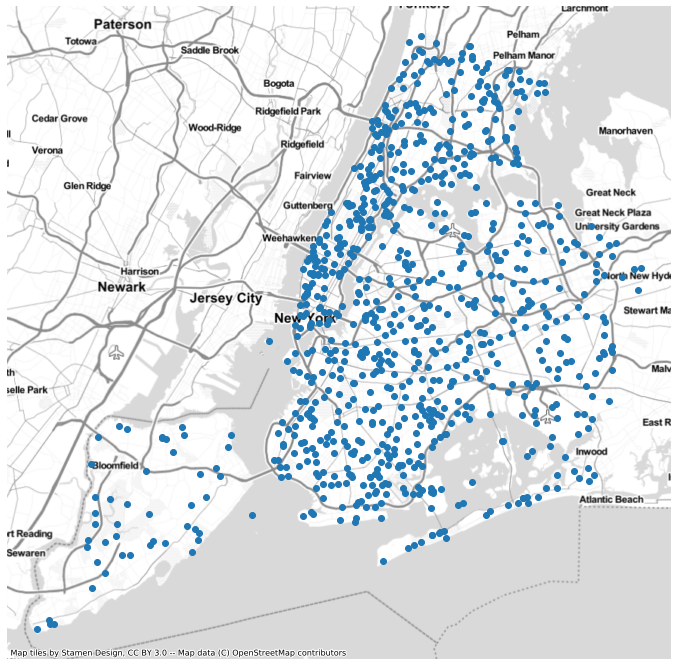

Dot Density Plots¶
[1]:
import geopandas as gpd
import mapped
mapped.__version__, gpd.__version__
[1]:
('19.12.1', '0.6.2')
[2]:
gdf = gpd.read_file(gpd.datasets.get_path('nybb'))
gdf['Population'] = [
479_458,
2_358_582,
2_648_771,
1_664_727,
1_471_160,
]
gdf
[2]:
| BoroCode | BoroName | Shape_Leng | Shape_Area | geometry | Population | |
|---|---|---|---|---|---|---|
| 0 | 5 | Staten Island | 330470.010332 | 1.623820e+09 | MULTIPOLYGON (((970217.022 145643.332, 970227.... | 479458 |
| 1 | 4 | Queens | 896344.047763 | 3.045213e+09 | MULTIPOLYGON (((1029606.077 156073.814, 102957... | 2358582 |
| 2 | 3 | Brooklyn | 741080.523166 | 1.937479e+09 | MULTIPOLYGON (((1021176.479 151374.797, 102100... | 2648771 |
| 3 | 1 | Manhattan | 359299.096471 | 6.364715e+08 | MULTIPOLYGON (((981219.056 188655.316, 980940.... | 1664727 |
| 4 | 2 | Bronx | 464392.991824 | 1.186925e+09 | MULTIPOLYGON (((1012821.806 229228.265, 101278... | 1471160 |
The dotdensity method is patched into the GeoDataFrame class. It lets you generate a new GeoSeries of points in each polygon in proportion to some attribute in the original GeoDataFrame.
[3]:
dots = gdf.dotdensity('Population', units_per_point=1e4)
[4]:
dots.head()
[4]:
0 0 POINT (918444.793 122684.940)
1 POINT (946389.317 169427.663)
2 POINT (951486.097 172255.074)
3 POINT (929640.480 147704.559)
4 POINT (929587.612 150638.626)
Name: geometry, dtype: geometry
[5]:
dots.plot(basemap="Stamen.TonerLite", figsize=(12,12));

-
GeoDataFrame.dotdensity(values, units_per_point=1, seed=None)¶ Create a GeoSeries of random points in polygons.
Parameters: - gdf (GeoDataFrame) – The areas in which to create points
- values (str or Series) – The [possibly scaled] number of points to create in each area
- units_per_point (numeric, optional) – The rate to scale the values in point generation.
- seed (int, optional) – A random seed
Returns: Return type: GeoSeries